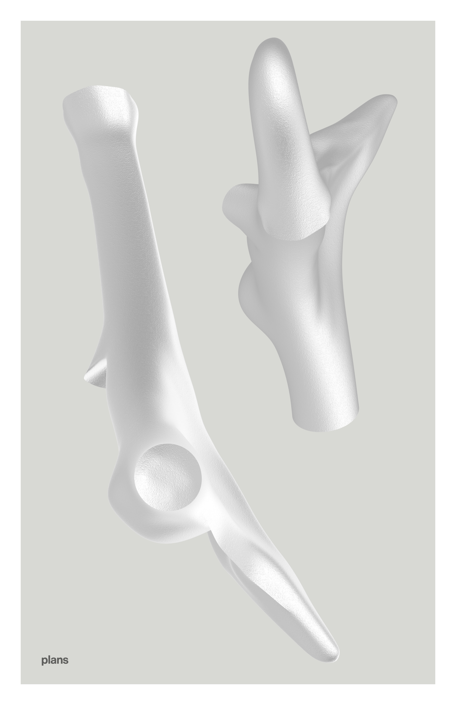
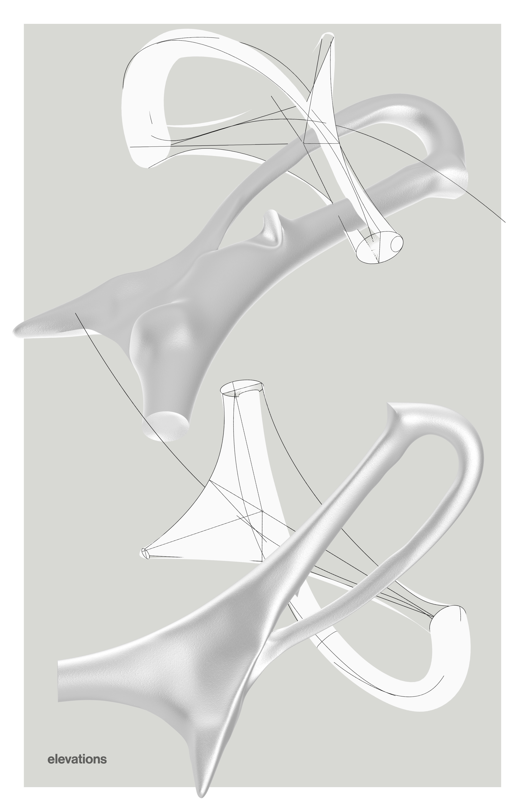
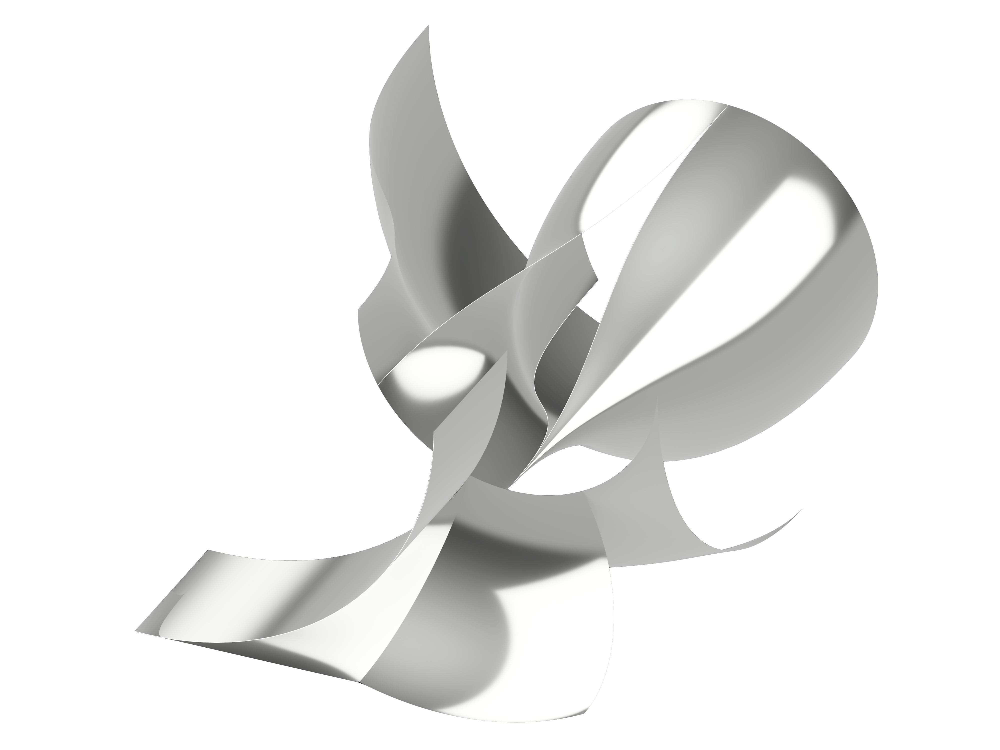
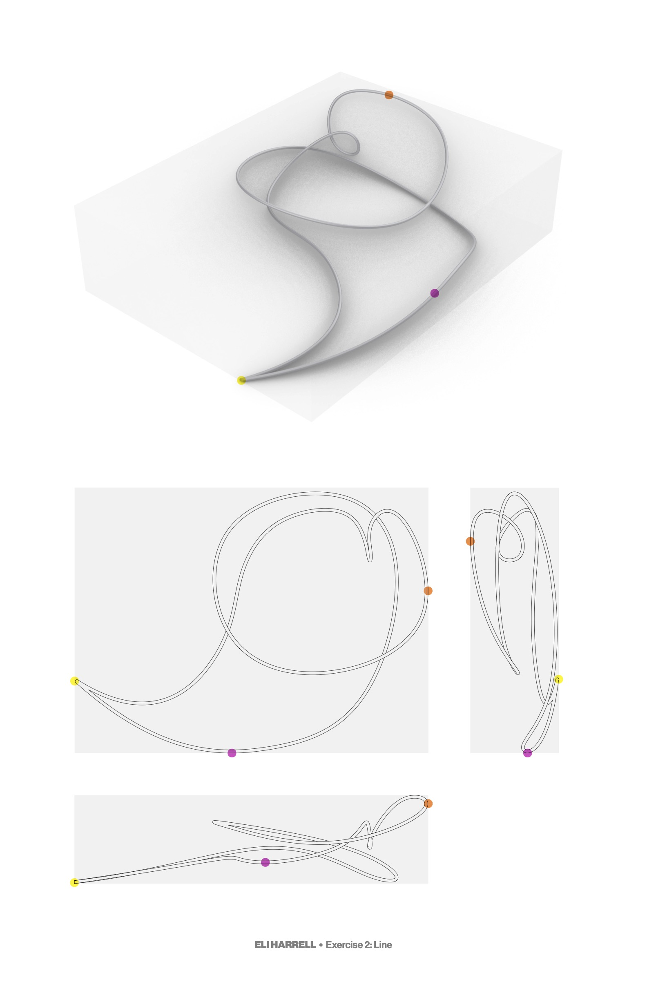
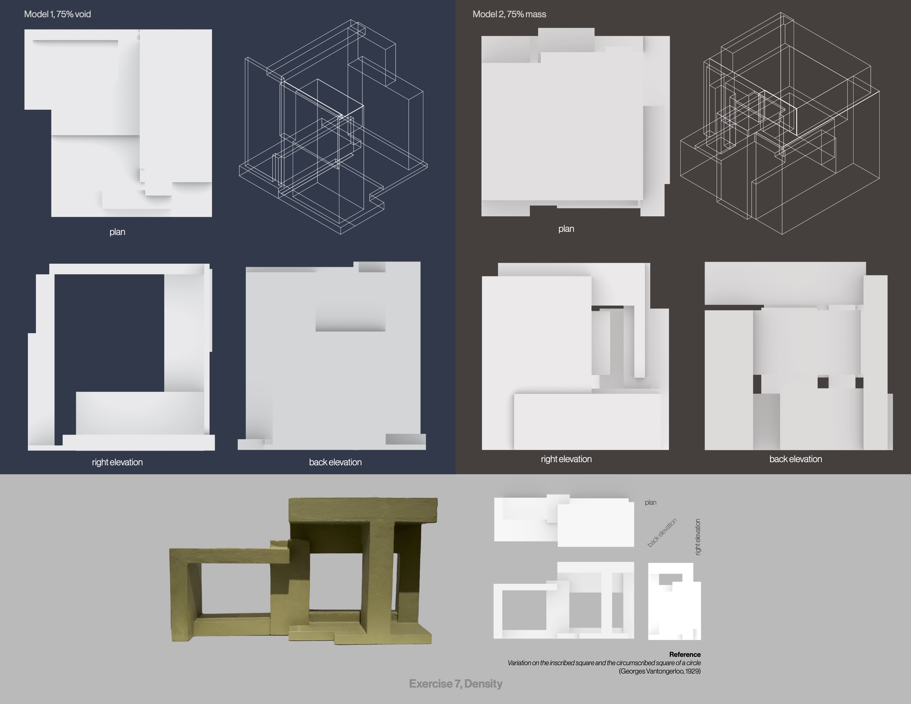

ELI HARRELL
Plastic Shapes
a set of computer ~ 3D projects
Modeled in Rhino for Geoffrey Goldberg's
course Complex Curves/Plastic Shapes.
click images to view them at full size.
| A fragment. |

 |
| An interpretation of Arp's Crown of Buds (1936). |

|
|
A surface. Click for a different perspective. top bottom front front bottom right back back top right back top left side |
 |
| A line in space. It touches its bounds in three places. |  |
|
Two cubes, interpreting Georges Vantongerloo's Variation on the inscribed square and the circumscribed square of a circle (1929). The space of mass in one cube is the space of void in the other. |
 |